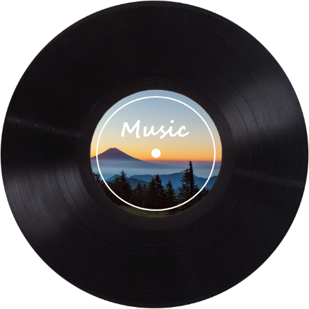

MUSIC
音楽
森のアトリエでつながる、天文学と音楽の世界
森のアトリエでは年間で、音楽史を辿る音楽プログラムを展開しています。
コンサートはもちろん、コンサート後に開催される天体観測など...。
現代では細分化されてしまった、あらゆる要素をひとつにより合わせ
今までにない新たな体験を提供し続けています。
「私がコンサートに行っていいのかな？って思っているあなたへ」ルナ天文台公式Youtubeチャンネルより
CLASSICAL CONCERT-クラシックコンサート-

生演奏と自然派フレンチ
毎週日曜日の夕方に、本館レストランで、ディナーコンサートを開催しています。コンサートを彩るのは、当館自慢の自然派フレンチ。料理長が自ら買い付けてきた、阿蘇・熊本県産の食材を手間暇かけて仕上げた皿の数々。ぜひくつろいだ空間の中で、生の演奏と上質なフレンチ江尾お楽しみください。
※コロナの影響により、現在クラシックコンサートは中止しています。
RECORD CONCERT-レコードコンサート-

森のアトリエでつながる、天文学と音楽の世界
当館に所蔵されている3,000枚を超えるレコードコレクション。
季節ごとのテーマに沿ったレコードを選び、お夕食と一緒にお楽しみいただきます。
デジタルにはない、アナログならではのあたたかく豊かな響きがレストランを潤します。